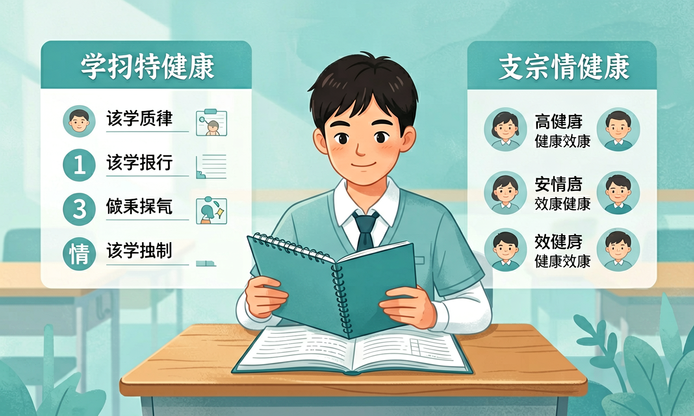
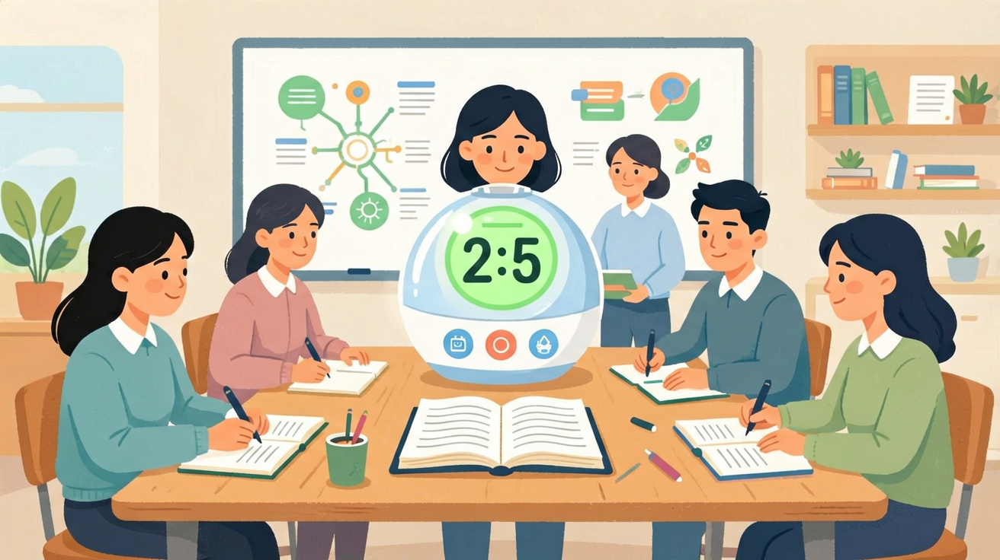
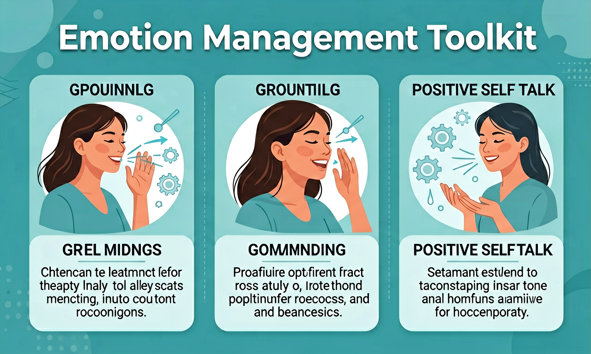

ABT Story
情境任务
And 你已经有一些生活经验，但面对真实情境时常感到拿不准。
But 练习：用「情绪—想法—行为」三步记录一次考试焦虑经历。
Therefore 本课用课标要点与可操作方法，帮你把感受变成行动。
升入初中后学习节奏变快，怎样管理情绪、提高学习适应力？

选择或输入后，本课会围绕你的问题展开。
And 你已经有一些生活经验，但面对真实情境时常感到拿不准。
But 练习：用「情绪—想法—行为」三步记录一次考试焦虑经历。
Therefore 本课用课标要点与可操作方法，帮你把感受变成行动。

拖动滑块，观察「压力/情绪强度」变化，并写下你的应对策略。

练习：用「情绪—想法—行为」三步记录一次考试焦虑经历。
步骤：①描述事实 ②识别感受 ③选择合规/积极的回应 ④记录结果与反思。
记忆锚点：先觉察，再行动；把口号变成可核查的行为证据。
写出本课 3 个关键词，并各举一个生活例子。
用「觉察—分析—行动」完成一次真实情境记录。
设计一个同伴互助小活动，帮助他人避免本课易错点。
遇到挫折时，更有效的第一步是？
常见错误：把情绪压抑当作管理；错因是没有区分「感受」与「行为选择」。
以下哪项最符合本课倡导的做法？
把本课方法用到一次真实经历中，并写下复盘。
本节点的前置、后续由标准知识图谱模块渲染。